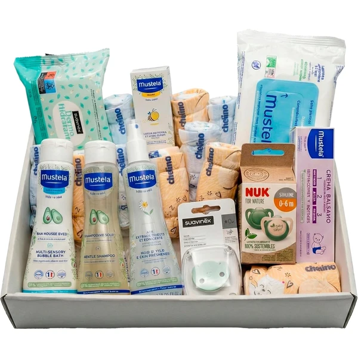
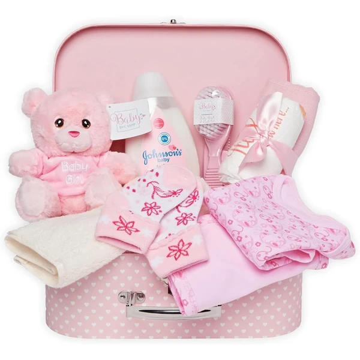
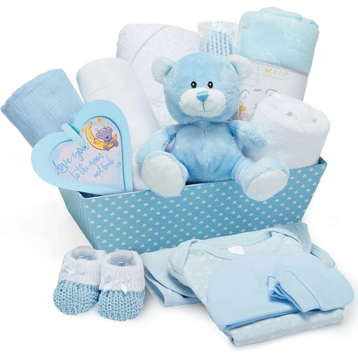
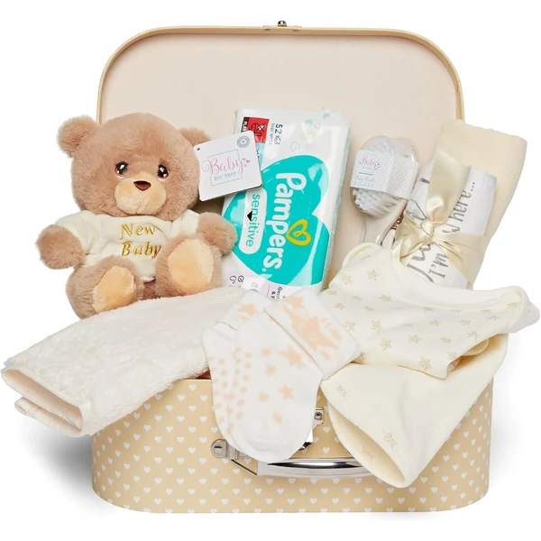
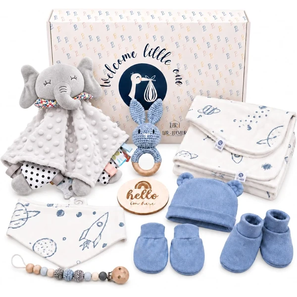

Canastilla de higiene para recién nacido
Una cesta de regalo con un kit completo de higiene para el recién nacido: gel, champú, colonia, toallitas, pañales y chupetes. Llega decorada y lista para regalar, con tarjeta para personalizar el mensaje.
⭐ ¿Por qué nos gusta?
- ✔ Kit completo de higiene en un solo regalo.
- ✔ Productos de farmacia aptos para piel sensible.
- ✔ Presentación decorada, lista para entregar.
💬 Lo que más destacan las familias
Muchos padres coinciden en que se nota que son productos pensados para piel de bebé, suaves y sin perfumes fuertes. También gusta que venga todo listo para usar desde el primer día, sin tener que completar el kit por separado.
Ver en Amazon

Canastilla personalizada Musti Estrellas
Un set de regalo de nacimiento personalizable con el nombre del bebé, presentado en una cesta de mimbre. Incluye colonia, crema, toallitas, champú y un doudou con sonajero.
⭐ ¿Por qué nos gusta?
- ✔ Personalizable con el nombre del bebé.
- ✔ Incluye productos de cuidado y un doudou sonajero.
- ✔ Presentación cuidada en cesta de mimbre.
💬 Lo que más destacan las familias
Lo que más suele gustar es lo bien que queda personalizada con el nombre, algo que se nota especialmente cuando es un regalo de nacimiento. El doudou con sonajero suele ser lo primero que los peques agarran nada más abrirlo.
Ver en Amazon

Cesta maletín recién nacido niña
Una cesta con forma de maletín en tonos rosas, con un osito de peluche, muselina, body, calcetines y artículos de baño para el recién nacido. Una vez vaciada, la caja se puede reutilizar para guardar recuerdos.
⭐ ¿Por qué nos gusta?
- ✔ Incluye ropa, osito y artículos de baño.
- ✔ La caja se reutiliza como guarda-recuerdos.
- ✔ Presentación especial en forma de maletín.
💬 Lo que más destacan las familias
Una de las cosas más comentadas es lo bonita que queda la presentación en forma de maletín, perfecta para sorprender en el regalo. Además, muchos guardan luego la caja como recuerdo, y el osito suele convertirse en uno de los primeros peluches del bebé.
Ver en Amazon

Cesta de regalo recién nacido niño
Una cesta de regalo en tonos azules con un osito de peluche, body, babero, gorro, patucos, manta y toalla con capucha. Se presenta envuelta en tela de gasa con cordón.
⭐ ¿Por qué nos gusta?
- ✔ Incluye ropa, manta y toalla con capucha.
- ✔ Presentación envuelta en tela de gasa.
- ✔ Pensada especialmente para baby shower.
💬 Lo que más destacan las familias
Los compradores valoran especialmente que trae de todo, desde ropa hasta toalla con capucha, así que no hace falta añadir nada más. Se comenta también que la presentación envuelta en gasa da el pego para regalos de baby shower.
Ver en Amazon

Cesta maletín recién nacido crema
Una cesta con forma de maletín en tonos crema, con un osito de peluche, muselina, body, calcetines y artículos de baño para el recién nacido. Una vez vaciada, la caja se puede reutilizar para guardar recuerdos.
⭐ ¿Por qué nos gusta?
- ✔ Incluye ropa, osito y artículos de baño.
- ✔ La caja se reutiliza como guarda-recuerdos.
- ✔ Presentación especial en forma de maletín.
💬 Lo que más destacan las familias
Entre los comentarios más habituales aparece lo práctico de elegir un color neutro cuando no se sabe si el bebé es niño o niña. También se agradece que, como en el modelo anterior, la caja se pueda reaprovechar después como caja de recuerdos.
Ver en Amazon

Canastilla orgánica veviur
Una canastilla de algodón 100% orgánico con babero, pañuelo, gorro, manoplas, doudou, sonajero y portachupetes. Pensada como primera puesta completa para el recién nacido.
⭐ ¿Por qué nos gusta?
- ✔ Algodón 100% orgánico e hipoalergénico.
- ✔ Incluye doudou, sonajero y portachupetes.
- ✔ Set completo para la primera puesta.
💬 Lo que más destacan las familias
No es raro encontrar comentarios sobre la suavidad del algodón orgánico, algo que se agradece especialmente en las primeras semanas. El sonajero y el doudou también se llevan buenas críticas como primeros juguetes del bebé.
Ver en Amazon